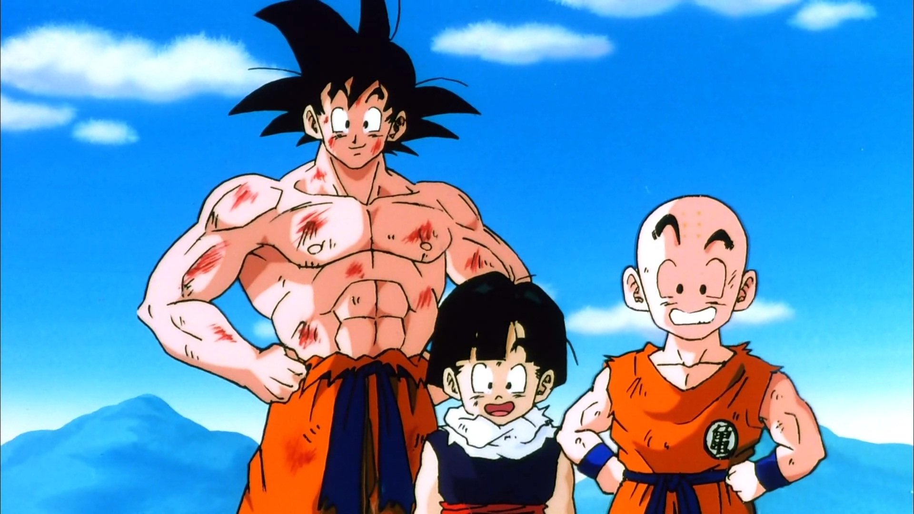

About Krillin
Krillin is awesome! He's a character of Dragonball Z, an anime show every 90's kid loved. With his fellow fighters, also known as saiyan, Krillin has personal challenges to overcome to become stronger.
Krillin and his friends
Krillin's Characteristics
- He's got an bald head
- He's pretty short compared to others chars
- He's trying to a good guy at all times
Krillin's friends
Krillin is a monk and is trying to become the strongest on earth. His best friend is Son Goku who is also training with him. Both compete to be the strongest.Click on the links below to read more about Dragonball: